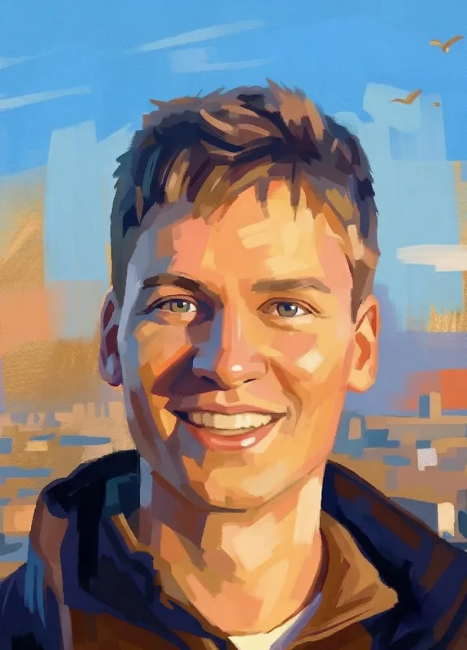

Fabian Gloeckle
Fabian
Gloeckle

I am a machine learning researcher and mathematician working on language models for code and math. I am completing my PhD at Meta FAIR Paris and Institut Polytechnique de Paris, advised by Amaury Hayat and Gabriel Synnaeve.
My research focuses on improving language model reasoning through better pretraining (multi-token prediction), explorative and hierarchical reinforcement learning, and inference scaling. I also have a strong interest in formal mathematics in systems such as Lean. To advance automated scientific research, we must build highly parallel AI systems that interact with verifiers, self-verify, and conduct open-ended exploration.
Email: firstname dot lastname at enpc dot fr
Updates
- Mar 2026 Finished my PhD contract at FAIR; now on the industry research job market.
- Mar 2026 Released ABEL open-source.
- Dec 2025 Gave a talk at the AI Morning for Mathematics, Laboratoire Jacques-Louis Lions (LJLL), Sorbonne Université, Paris.
- Nov 2025 Gave a talk at Timothy Gowers' seminar, La philosophie de la pratique des mathématiques, Collège de France, Paris.
- Oct 2025 Recognized as a Top Reviewer for NeurIPS 2025.
- Sep 2025 Gave a talk at the Machine Learning and AI for Mathematics workshop, Mathematisches Forschungsinstitut Oberwolfach (MFO), Germany.
- Sep 2025 Gave a talk at the Mechanization and Mathematical Research workshop, Lorentz Center, Leiden, Netherlands.
- Jul 2025 Gave a talk at the Machine Learning and Mathematics workshop, Korea Institute for Advanced Study (KIAS), Seoul.
- May 2025 Gave a talk at the Mathematics for and by Large Language Models workshop, Institut des Hautes Études Scientifiques (IHES), Bures-sur-Yvette.
- Apr 2025 Gave a talk at the Deep Learning Models for Mathematics and Type Theory workshop, Chalmers AI Research Centre (CHAIR), Gothenburg, Sweden.
- Jul 2024 Gave a talk at the Sacl-AI 4 Science Workshop, Palaiseau.
- Sep 2023 Gave a talk at the Congrès des Jeunes Chercheurs en Mathématiques et Applications (CJC-MA), CentraleSupélec, Gif-sur-Yvette.
Selected Publications
Loading publications...